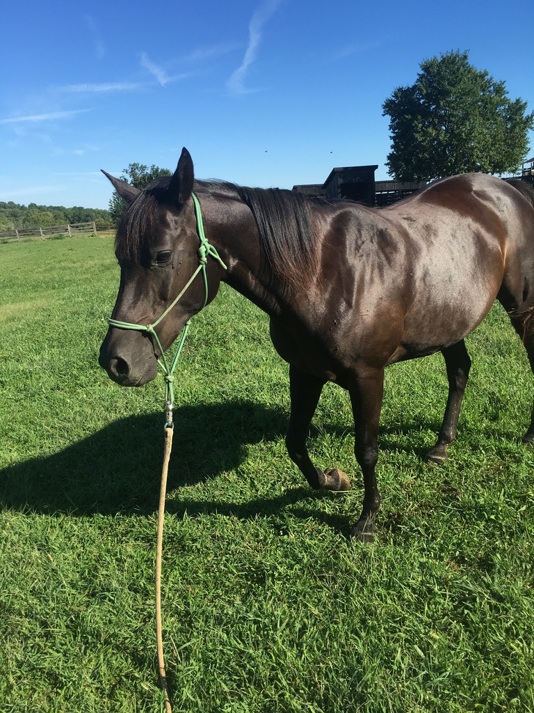
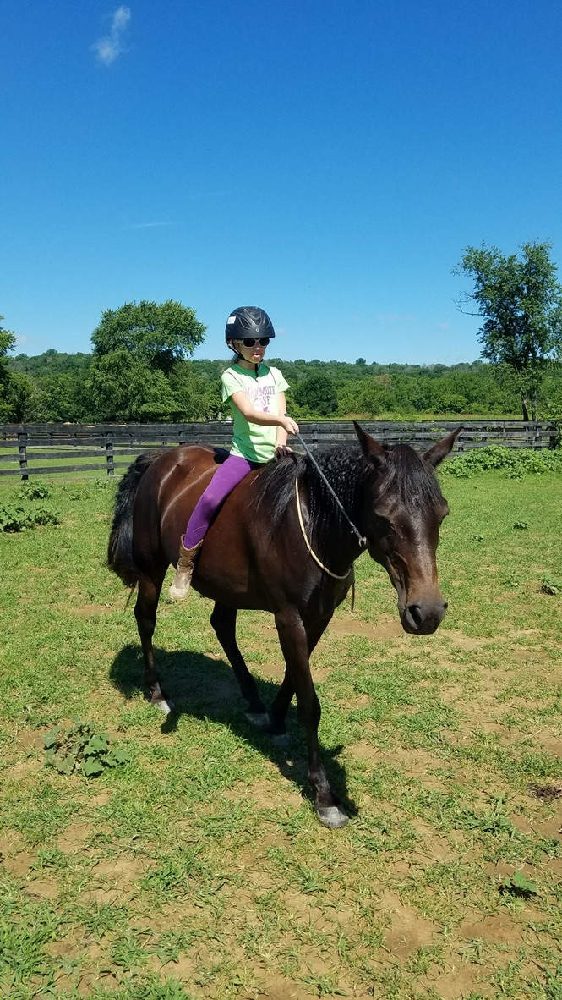
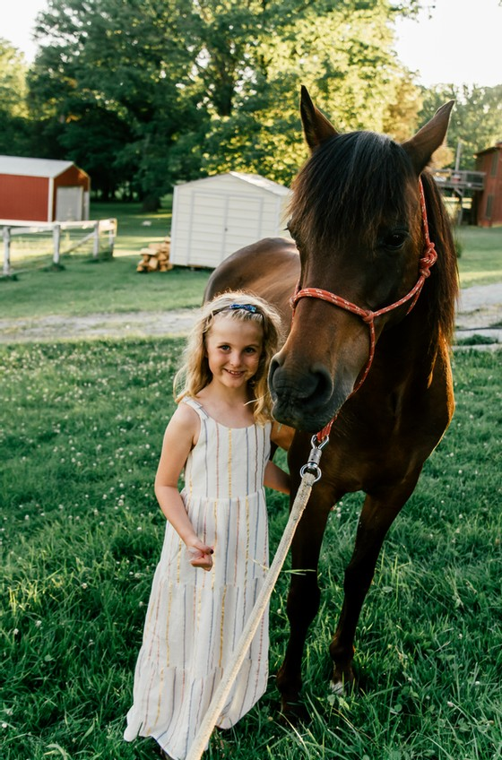
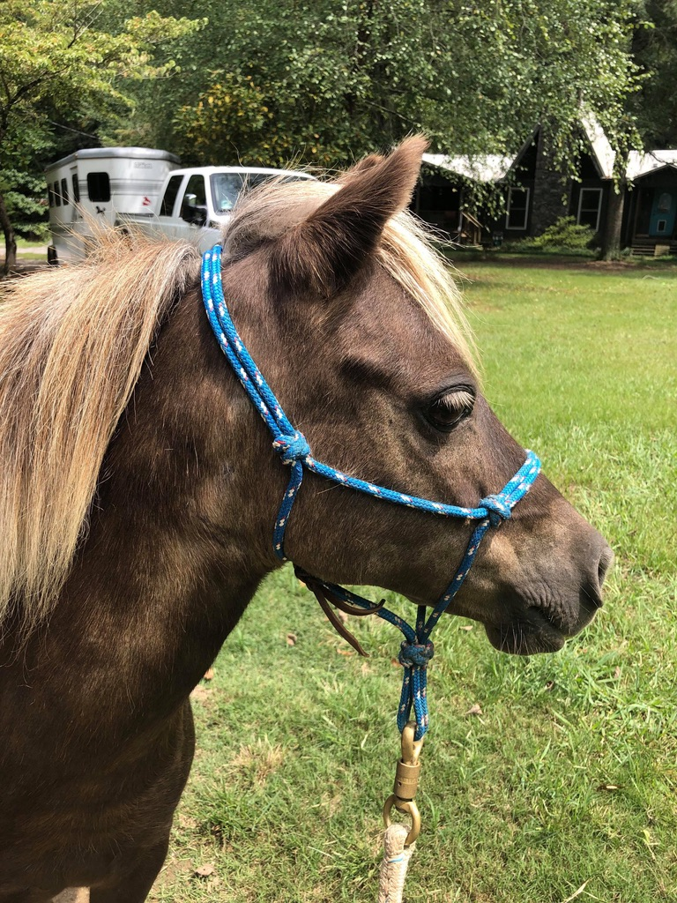
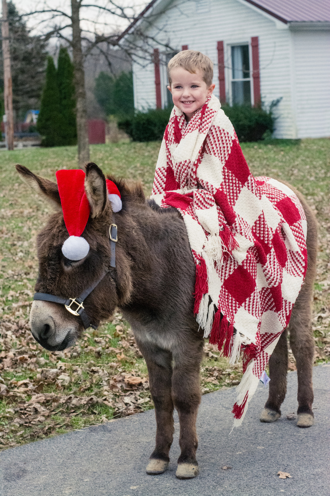

Windborne Equine Education

Windy
all about Windy
- Breed: 50% Arabian, 50% Quarter Horse
- Color: Black
- Favorite snack: Gummy worms
- Favorite activity: Trail ride
- Favorite people: Small children and babies
- Age: 26 years

Raven
all about Raven
- Breed: 75% Arabian, 25% Quarter Horse
- Color: Black bay
- Favorite snack: Soft peppermints
- Favorite activity: Playing in the creek
- Age: 16 years

Fiach
all about Fiach
- Breed: 75% Arabian, 25% Quarter Horse
- Color: Bay
- Favorite snack: Popsicles
- Favorite activity: Groundwork and partner games
- Favorite people: Anyone who will give him attention!
- Age: 16 years

Sundae
All about Sundae
- Breed: 50% Mini horse, 50% Shetland pony, 100% Adorable
- Color: Chocolate with flaxen mane and tail
- Favorite snack: Apples
- Favorite activity: Snuggling with children, playing in the creek, zooming around super fast!
- Favorite people: Small children and babies
- Age: 10 years

Buttons
All about Buttons
- Breed: Minature Donkey
- Color: Gray
- Favorite snack: Carrots
- Favorite activity: Snuggling with people, especially his farrier and playing with Fiach
- Favorite people: The farrier and his family
- Age: 13 years